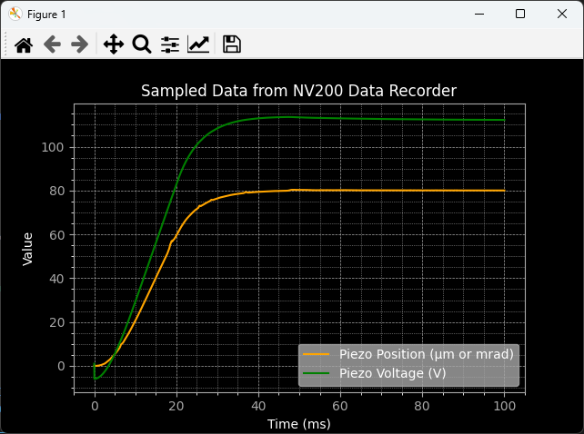

Examples
Device Discovery
This example demonstrates how to asynchronously discover compatible devices on all available interfaces. The first discovery is done without extended information, so it is faster, while the second discovery includes extended information about the devices, which takes longer.
1import asyncio
2from nv200.device_discovery import discover_devices, DiscoverFlags
3
4
5# async Main execution
6async def main_async():
7 """
8 Asynchronously discovers available devices and prints their information.
9 """
10 print("\nDiscovering devices...")
11 devices = await discover_devices()
12
13 if not devices:
14 print("No devices found.")
15 else:
16 print(f"Found {len(devices)} device(s):")
17 for device in devices:
18 print(device)
19
20 print("\nDiscovering devices with extended information...")
21 devices = await discover_devices(DiscoverFlags.ALL_INTERFACES | DiscoverFlags.READ_DEVICE_INFO)
22
23 if not devices:
24 print("No devices found.")
25 else:
26 print(f"Found {len(devices)} device(s):")
27 for device in devices:
28 print(device)
29
30
31# Running the async main function
32if __name__ == "__main__":
33 asyncio.run(main_async())
34
The output of the above example can look like this:
Discovering devices...
Found 4 device(s):
Telnet @ 192.168.101.3 (MAC: 00:80:A3:5A:7F:CB)
Telnet @ 192.168.101.2 (MAC: 00:80:A3:79:C6:1E)
Telnet @ 192.168.101.4 (MAC: 00:80:A3:6F:60:F5)
Serial @ COM5 - SPI Controller Box
Discovering devices with extended information...
Found 4 device(s):
Telnet @ 192.168.101.4 (MAC: 00:80:A3:6F:60:F5) - NV200/D_NET - {'actuator_name': 'PSH15SG_Y ', 'actuator_serial': '123910'}
Telnet @ 192.168.101.2 (MAC: 00:80:A3:79:C6:1E) - NV200/D_NET - {'actuator_name': 'PSH20 ', 'actuator_serial': '123910'}
Telnet @ 192.168.101.3 (MAC: 00:80:A3:5A:7F:CB) - SPI Controller Box
Serial @ COM5 - SPI Controller Box
Serial Connection
The example below demonstrates how to establish a serial connection to the NV200/D Compact Amplifier. Because no serial port is specified, the library will automatically search for available serial ports and connect to the first one it finds.
1import asyncio
2from nv200.nv200_device import NV200Device
3from nv200.shared_types import TransportType
4from nv200.connection_utils import connect_to_single_device
5
6
7async def ethernet_auto_detect():
8 """
9 Automatically detects and establishes an Ethernet connection to the first detected device using Telnet.
10 """
11 device = await connect_to_single_device(NV200Device, TransportType.SERIAL)
12 print(f"Connected to device: {device.device_info}")
13 await device.close()
14
15
16if __name__ == "__main__":
17 asyncio.run(ethernet_auto_detect())
This is the expected output of the above example:
Connected to device on serial port: COM3
Ethernet Connection
The example shows, how to manually create a NV200Device instance for a device connected via Ethernet. Because no IP address is specified, the library will automatically search for available devices and connect to the first one it finds.
1import asyncio
2from nv200.nv200_device import NV200Device
3from nv200.shared_types import TransportType
4from nv200.connection_utils import connect_to_single_device
5
6
7async def ethernet_auto_detect():
8 """
9 Automatically detects and establishes an Ethernet connection to the first detected device using Telnet.
10 """
11 device = await connect_to_single_device(NV200Device, TransportType.SERIAL)
12 print(f"Connected to device: {device.device_info}")
13 await device.close()
14
15
16if __name__ == "__main__":
17 asyncio.run(ethernet_auto_detect())
This is the expected output of the above example:
Connected to device: Telnet @ 192.168.101.4 - NV200/D_NET
Data Recorder
The example shows, how to use the data recorder functionality of the NV200/D Compact Amplifier. It demonstrates how to start and stop the data recorder, as well as how to retrieve recorded data.
1import asyncio
2import matplotlib.pyplot as plt
3
4from nv200.nv200_device import NV200Device
5from nv200.shared_types import DiscoverFlags
6from nv200.device_discovery import discover_devices
7from nv200.data_recorder import DataRecorder, DataRecorderSource, RecorderAutoStartMode
8import matplotlib_helpers
9
10
11
12async def data_recorder_test():
13 """
14 Asynchronous function to test the functionality of the DataRecorder with a given device.
15 """
16
17 # Discover devices connected via USB interface
18 print("Discovering devices connected via USB interface...")
19 detected_devices = await discover_devices(DiscoverFlags.DETECT_SERIAL | DiscoverFlags.READ_DEVICE_INFO)
20 if not detected_devices:
21 print("No devices found.")
22 return
23
24 # connect to the first detected device
25 device = NV200Device.from_detected_device(detected_devices[0])
26 await device.connect()
27 print(f"Connected to device: {device.device_info}")
28
29 # Move the device to its initial position and wait for a short duration to stabilize
30 await device.move_to_position(0)
31 await asyncio.sleep(0.4)
32
33 # Create a DataRecorder instance and configure it
34 recorder = DataRecorder(device)
35 await recorder.set_data_source(0, DataRecorderSource.PIEZO_POSITION)
36 await recorder.set_data_source(1, DataRecorderSource.PIEZO_VOLTAGE)
37 await recorder.set_autostart_mode(RecorderAutoStartMode.START_ON_SET_COMMAND)
38 rec_param = await recorder.set_recording_duration_ms(100)
39 print("Recording parameters:")
40 print(f" Used buffer entries: {rec_param.bufsize}")
41 print(f" Stride: {rec_param.stride}")
42 print(f" Sample frequency (Hz): {rec_param.sample_freq}")
43
44 # Start recording and move the device to a new position to record the parameters
45 await recorder.start_recording()
46 await device.move_to_position(80)
47 await asyncio.sleep(0.4)
48 print("Reading recorded data of both channels...")
49
50 # Read the recorded data from the DataRecorder
51 rec_data = await recorder.read_recorded_data()
52
53 # Use matplotlib to plot the recorded data
54 matplotlib_helpers.prepare_plot_style()
55 plt.plot(rec_data[0].sample_times_ms, rec_data[0].values, linestyle='-', color='orange', label=rec_data[0].source)
56 plt.plot(rec_data[1].sample_times_ms, rec_data[1].values, linestyle='-', color='green', label=rec_data[1].source)
57 matplotlib_helpers.show_plot()
58
59 await device.close()
60
61
62if __name__ == "__main__":
63 print("Running data recorder test...")
64 asyncio.run(data_recorder_test())
This is the expected output of the above example:
Running data recorder test...
Discovering devices connected via USB interface...
Connected to device: Serial @ COM3 - NV200/D_NET
Recording parameters:
Used buffer entries: 2000
Stride: 1
Sample frequency (Hz): 20000.0
Reading recorded data of both channels...
And the created matplotlib figure will look like this:
Waveform Generator
The example shows, how to use the arbitrary waveform generator functionality of the NV200/D Compact Amplifier. It demonstrates how to generate a sine waveform, transfer it to the device, start the waveform generator, and read back the recorded data.
1import asyncio
2import matplotlib.pyplot as plt
3
4from nv200.nv200_device import NV200Device
5from nv200.waveform_generator import WaveformGenerator, WaveformUnit, WaveformType
6from nv200.shared_types import TransportType, PidLoopMode
7from nv200.connection_utils import connect_to_single_device
8from nv200.data_recorder import DataRecorder, DataRecorderSource, RecorderAutoStartMode
9
10import matplotlib_helpers
11
12
13
14
15async def waveform_generator_test():
16 """
17 Asynchronous function to test the functionality of the WaveformGenerator class in closes loop mode.
18 """
19
20 # Connect to the one and only NV200 device connected via serial port
21 dev = await connect_to_single_device(NV200Device, TransportType.SERIAL)
22 await dev.pid.set_mode(PidLoopMode.CLOSED_LOOP)
23
24 # Generate a sine waveform with specified frequency and amplitude and
25 # transfer it to the device
26 print("Generating sine waveform...")
27 waveform_generator = WaveformGenerator(dev)
28 pos_range = await dev.get_position_range()
29 print(f"Position range: {pos_range}")
30 sine = waveform_generator.generate_waveform(waveform_type=WaveformType.SINE, freq_hz=10, low_level=pos_range[0], high_level=pos_range[1])
31 print(f"Sample factor {sine.sample_factor}")
32 print("Transferring waveform data to device...")
33 await waveform_generator.set_waveform(waveform=sine, unit=WaveformUnit.POSITION)
34
35 # Create a DataRecorder instance and configure it to record the movement of the piezo actuator
36 recorder = DataRecorder(dev)
37 await recorder.set_data_source(0, DataRecorderSource.PIEZO_POSITION)
38 await recorder.set_data_source(1, DataRecorderSource.PIEZO_VOLTAGE)
39 await recorder.set_autostart_mode(RecorderAutoStartMode.START_ON_WAVEFORM_GEN_RUN)
40 await recorder.set_recording_duration_ms(sine.cycle_time_ms * 1.2)
41 await recorder.start_recording()
42
43 # Start the waveform generator to run the sine wave for one cycle. This will also
44 # trigger the DataRecorder to start recording
45 print("Starting waveform generator...")
46 await waveform_generator.start(cycles=1, start_index=0)
47 print(f"Is running: {await waveform_generator.is_running()}")
48 await recorder.wait_until_finished()
49 print(f"Is running: {await waveform_generator.is_running()}")
50
51 # Read the recorded data from the DataRecorder
52 print("Reading recorded data of both channels...")
53 rec_data = await recorder.read_recorded_data()
54
55 # Use matplotlib to plot the generated sine wave and the recorded data
56 matplotlib_helpers.prepare_plot_style()
57 plt.plot(sine.sample_times_ms, sine.values, linestyle='-', color='orange', label="Generated Sine Wave")
58 plt.plot(rec_data[0].sample_times_ms, rec_data[0].values, linestyle='-', color='purple', label=rec_data[0].source)
59 plt.plot(rec_data[1].sample_times_ms, rec_data[1].values, linestyle='-', color='green', label=rec_data[1].source)
60 matplotlib_helpers.show_plot()
61
62 await dev.close()
63
64
65if __name__ == "__main__":
66 asyncio.run(waveform_generator_test())
This is the expected output of the above example:
Generating sine waveform...
Sample factor 2.0
Transferring waveform data to device...
Starting waveform generator...
Is running: True
Is running: False
Reading recorded data of both channels...
And the created matplotlib figure will look like this: